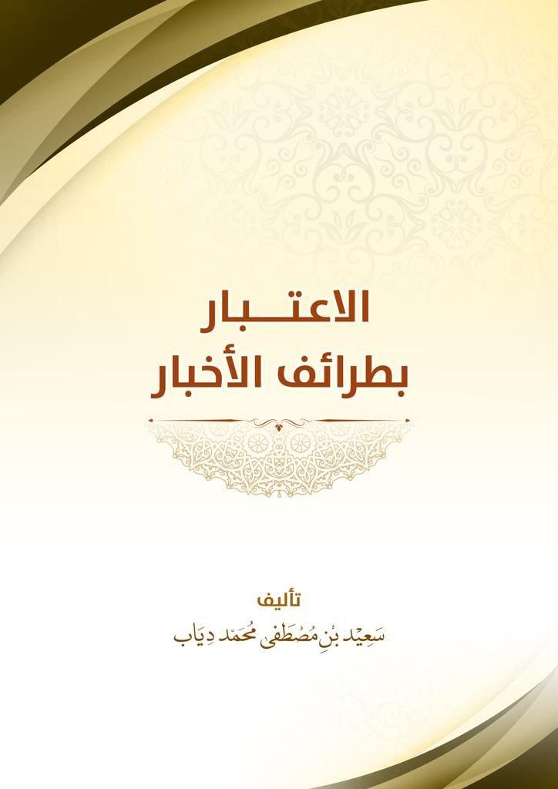
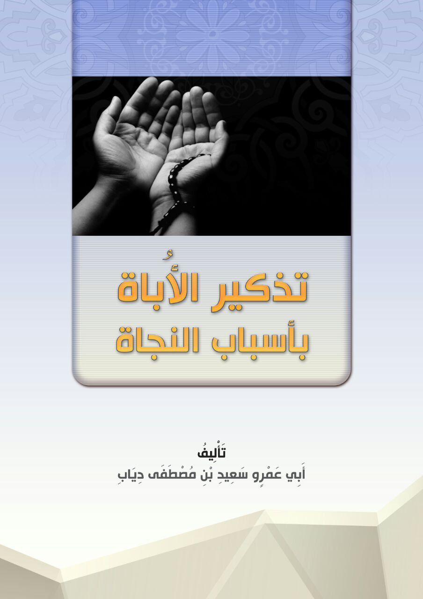
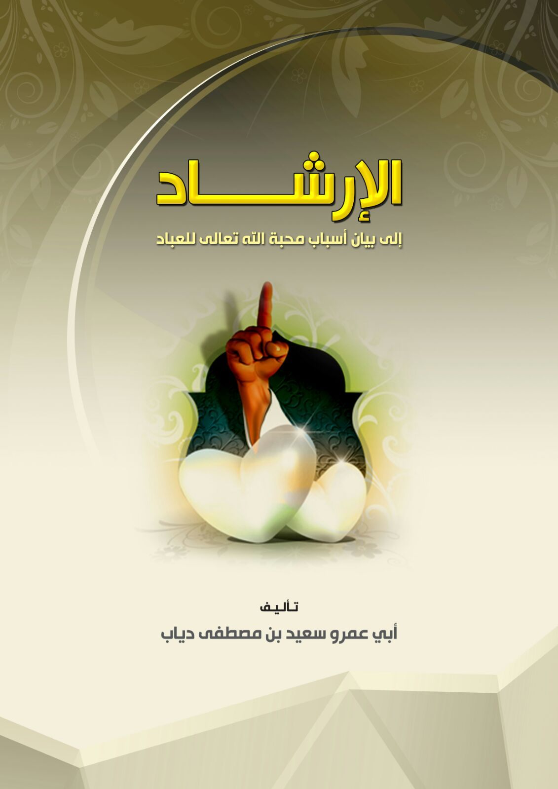
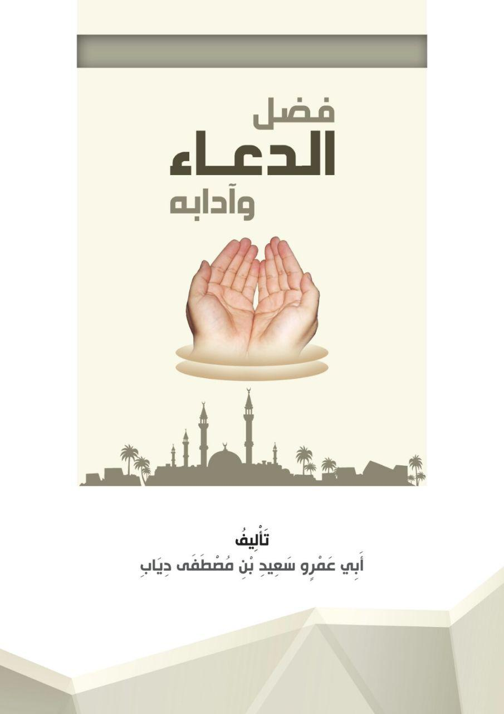
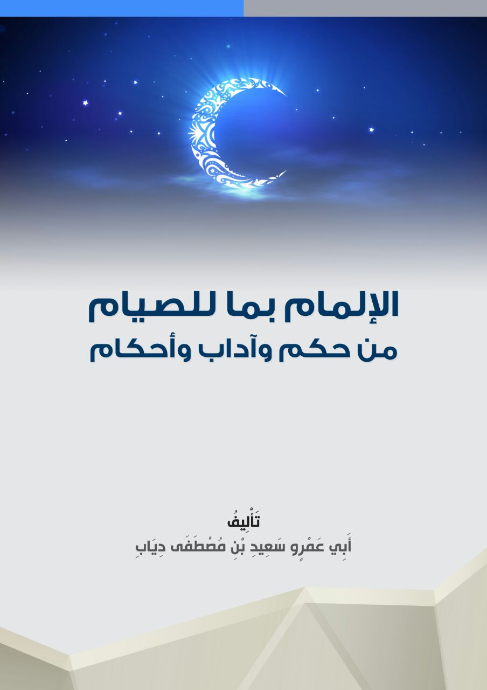
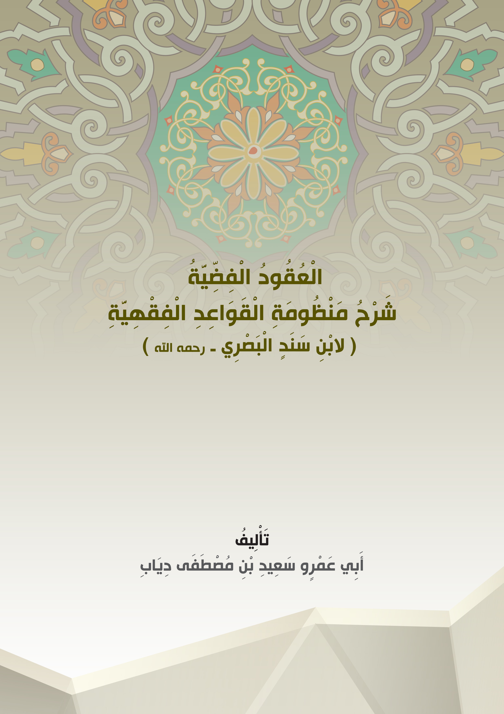
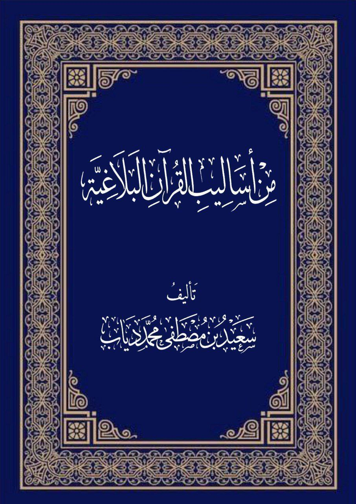

ابحث في الموقع

الآلئ والدرر

الاعتبار بطرائف الأخبار

إتحاف أهل الرسوخ

تذكير الأباة بأسباب النجاة

تمام المنة

الإرشاد إلى أسباب محبة الله للعباد

فضل الدعاء وآدابه

الإلمام بأحكام الصيام

االقواعد الفقهية

اأساليب القرآن البلاغية